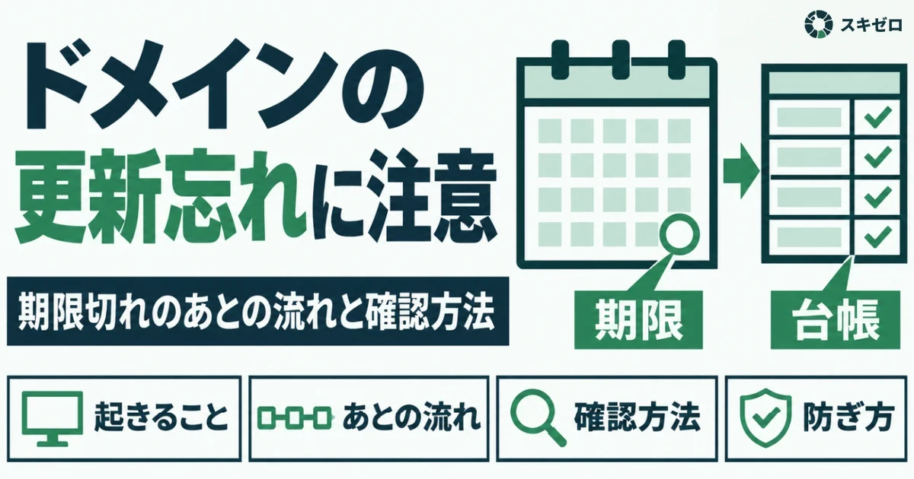
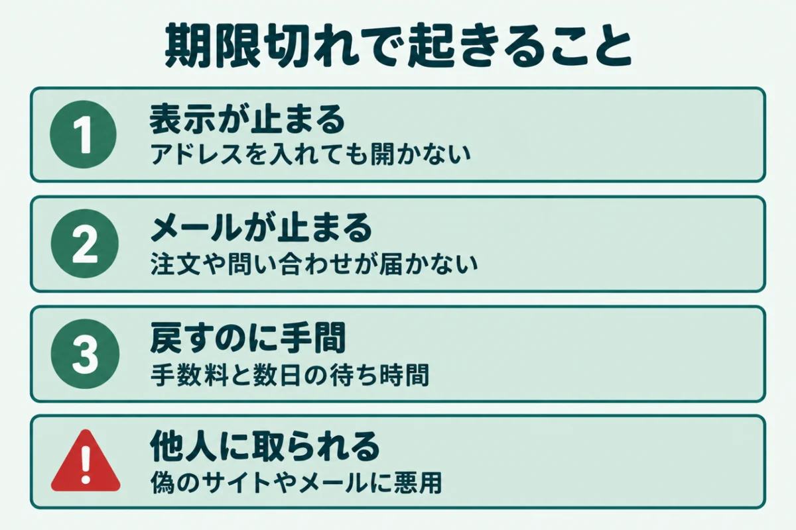
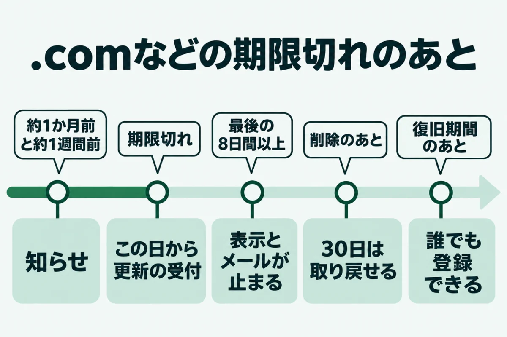
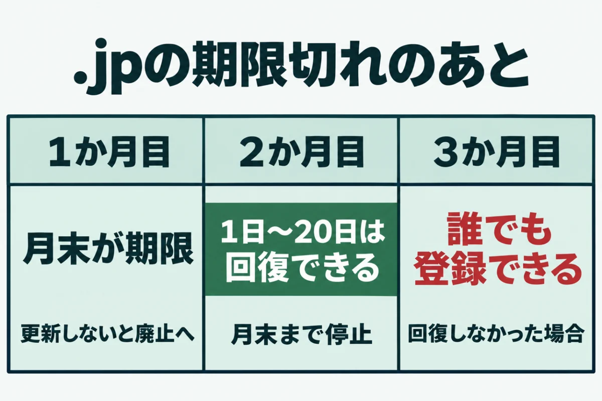
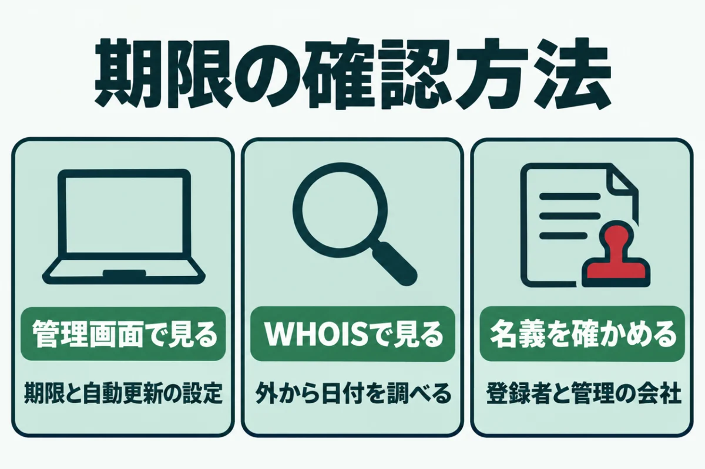
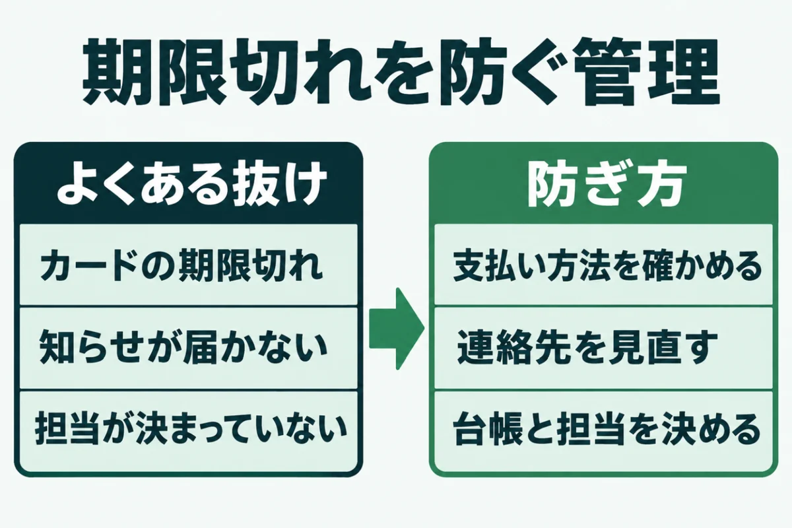

ドメインの更新忘れで起きること期限切れのあとの流れと期限の確認方法

「ドメインの更新を忘れていたら、ホームページはどうなるのか」と不安になっていませんか？
ドメインは、ホームページとメールの住所にあたるものです。担当者が替わったり支払いのカードが切れたりすると、更新は見落とされがちでしょう。
この記事では、ドメインの期限切れで起きることと、そのあとの流れを整理しました。.comなどと.jpで違う日数や、期限の確かめ方、防ぐための管理のしかたまで紹介します。
内容は、JPRSとICANNの公開情報や、国内のドメイン会社の公式マニュアルをもとにしました。自社のドメインの期限を手元に用意して読み進めてください。
ドメインが期限切れになると起きる4つのこと

ドメインが期限切れになると、ホームページとメールの両方に影響が出ます。サーバーの契約が残っていても、住所にあたるドメインが使えなければ、誰もたどり着けません。
影響は、止まること、戻すのに手間がかかること、他人に渡るおそれの順に大きくなるのです。期限が過ぎてからの時間が長いほど、取り戻すのは難しくなるでしょう。順に見ていきましょう。
① ホームページが表示されなくなる
エックスサーバーのマニュアルには、ドメインが失効するとWebもメールも使えなくなると書かれています。お客さまがアドレスを入れても、ページが開かない状態です。ドメイン会社によっては、期限切れを知らせるページに切り替わることもあります。検索結果からの訪問や、広告からの訪問も止まってしまうでしょう。問い合わせや予約を受け付けているサイトなら、その間の機会を失うことになります。会社の信用に関わると考えて、早めに手を打ってください。
② メールが送れず、届かなくなる
会社のメールアドレスが同じドメインなら、メールも止まります。取引先からの見積もりの依頼や、注文の知らせが届かなくなるのです。相手には届かなかったという知らせが返るか、何も起きないように見えることもあるでしょう。メールが止まると、気づくのがさらに遅れるおそれがあります。ドメイン会社からの「期限が切れました」という知らせも、同じアドレスに届く設定なら読めません。止まっていた間のメールは、相手に送り直してもらうことになります。
③ 戻すのに手数料と日数がかかる
期限が過ぎても、しばらくは戻せる期間があります。ただし時期によっては、更新料に加えて復旧の手数料が要るのです。お名前.comの案内でも、復旧には更新料金に加えて復旧手数料が必要とされています。手続きが済んでから元に戻るまでにも数日かかることがあるでしょう。お名前.comは、ドメインの種類ごとに1営業日から8営業日ほどの目安を示しました。申し込んでも、必ず復旧が認められるとは限らない点にも注意してください。
④ 他人に取られて悪用されるおそれがある
戻せる期間を過ぎると、ドメインは誰でも登録できる状態に戻ります。JPRSは、関係のない第三者に登録されて悪用されるおそれがあると注意を促しました。古いリンクや検索結果から人が流れ込むので、偽のサイトに使われることがあるのです。同じメールアドレスを作られるおそれもあります。そのアドレスで登録したサービスのパスワードを再発行され、乗っ取られる危険もJPRSは挙げました。一度他人の手に渡ると、取り戻すのはとても難しくなるでしょう。
ドメインの期限切れのあとの流れ（.comなどの場合）

.comや.netなどのドメインは、ICANNが決めたルールに沿って期限切れのあとが進みます。期限の前、期限のあと、削除のあとの3つの段階に分けて見ると分かりやすいでしょう。
実際の日数や料金は、ドメイン会社ごとに違います。ICANNのルールは、どの会社にも共通する最低限の決まりです。自社のドメイン会社の規約とあわせて確かめてください。
期限の前に知らせが2回以上届く
ICANNの決まりでは、ドメイン会社は期限の前に少なくとも2回、知らせを送ります。1回は期限の約1か月前、もう1回は約1週間前です。知らせは、登録している連絡先のメールアドレスに届きます。そのアドレスを誰も見ていなければ、知らせは役に立ちません。退職した人のアドレスや、制作会社のアドレスのままになっていないかを確かめましょう。期限のあとにも、5日以内に知らせを送る決まりがあります。この知らせが、取り戻すための最後の合図になるのです。
期限が過ぎると、表示とメールが止まる
期限が過ぎたドメインは、ドメイン会社が名前の案内を止めることになっています。期限のあとに更新できる期間のうち、少なくとも最後の8日間は止める決まりです。止まっている間も、元の持ち主は更新して取り戻せます。更新を受け付ける期間は会社ごとに違い、ICANNの説明では1日から45日でした。エックスサーバーでは、期限の日から30日以内なら.comなどは更新料だけで戻せるとしています。31日から45日の間は、更新料に1万9,250円が加わる決まりです。
削除のあと30日は取り戻せる
更新できる期間を過ぎると、ドメインは削除の手続きに進みます。それでも、.comなどの多くのドメインには30日の復旧期間が設けられているのです。英語ではRedemption Grace Periodと呼ばれ、略してRGPと書かれます。この間は他人に移すことはできず、元の持ち主だけが取り戻せる仕組みです。ただし、更新料とは別に、復旧の手数料がかかることがあります。この期間も過ぎると、誰でも登録できる状態に戻ってしまうでしょう。
ドメインの期限切れのあとの流れ（.jpの場合）

.jpのドメインは、JPRSが管理しています。.comなどとは日数の数え方が違い、月末と翌月の20日が大事な区切りです。
会社名などで取る「〇〇.jp」の形を中心に紹介しましょう。「co.jp」などの形も、回復の受付は同じく月の1日から20日です。ただし、取り戻せないまま進んだあとの扱いは形によって違うので、管理画面で種類を確かめてください。
期限は月末で、更新しないと廃止に進む
JPRSは、.jpのドメインの有効期限を、登録した日の1年後の月末に決めています。期限までに廃止の申し出がなければ、1年ずつ自動で更新される仕組みです。ただし、ドメイン会社で更新の手続きをしないと、廃止に進むのがふつうでしょう。期限の日付が月末なので、締め切りを月の途中と思い込まないようにしてください。ドメイン会社によっては、受付の締め切りがもう少し前に設けられています。期限と締め切りの両方を、管理画面で見ておきましょう。
廃止の翌月の20日までは回復できる
廃止されたドメインは、翌日から1か月間、月末まで停止の状態になります。この月の1日から20日の間なら、登録回復の申し込みが可能です。回復が済むと、ドメインは再び使える状態に戻るでしょう。止まっていたサイトやメールも、元どおりに使えるはずです。一方で、回復しないまま月末を過ぎると、誰でも登録できるようになります。JPRSは、回復にはふつう料金がかかるとしました。期限や手続きはドメイン会社で違うことがあるとも、あわせて案内しています。
ドメイン会社の締め切りはもっと早いことがある
JPRSの回復の受付は20日間ですが、ドメイン会社の締め切りはそれより短いことがあります。エックスサーバーでは、「〇〇.jp」の形は期限の日から15日以内が復旧の目安です。料金は更新料に5,217円が加わり、それを過ぎると復旧できません。「co.jp」なども15日以内で、加わる額は7,700円でした。自社が使うドメイン会社の締め切りを、先に調べておきましょう。額は同社のマニュアルに載っているもので、上位の会社によって変わることがあるそうです。
ドメインの期限切れを防ぐ期限の確認方法

ドメインの期限は、ドメイン会社の管理画面と、外からの検索の2つで確かめられます。どちらも数分で終わる作業です。
あわせて、誰の名義で、どこの会社が管理しているかも見ておきましょう。期限が分かっても、更新できる人がいなければ止まってしまうからです。今日の時点の期限を、社内の表に書き写しておくと役に立ちます。
ドメイン会社の管理画面で見る
いちばん確かなのは、ドメインを取った会社の管理画面を見る方法になります。ドメインの一覧に、期限の日付と自動更新の設定が並んでいるはずです。エックスサーバーやお名前.comなど、会社ごとに画面の名前は違うでしょう。どの会社で取ったか分からないときは、外からの検索で調べられます。ログインのIDとパスワードが分からない場合は、ドメイン会社の窓口に相談してください。名義を確かめる手続きが要ることもあるので、時間に余裕を持って動きましょう。
WHOISの検索で外から見る
WHOISは、ドメインの登録の情報を誰でも調べられる仕組みです。.jpなら、JPRSのWHOISの検索ページでドメインを入れて調べます。「〇〇.jp」の形は「有効期限」の欄に日付が出るのです。「co.jp」などは、「状態」の欄のかっこの中に出ます。.comなどは、ICANNの検索ページ「ICANN Lookup」で期限を調べられるでしょう。JPRSのWHOISは、反映に最長で1日ほどかかることがあります。更新した直後は、古い日付のままでも慌てないでください。
名義と管理している会社を確かめる
制作会社にホームページを頼んだとき、ドメインも制作会社の名義で取っていることがあります。その場合、更新の知らせは制作会社に届き、自社には届きません。WHOISや管理画面で、登録者が自社の名前になっているかを見てください。制作会社の名義なら、更新を誰が担うかを書面で決めておくと安心です。保守契約で確かめたい点もまとめました。制作会社に任せたホームページ、保守契約で確認したいこと｜5つの項目と見直しの手順を見てください。
ドメインの期限切れを防ぐ管理のしかた

ドメインの期限切れの多くは、更新の操作そのものより支払いの失敗と連絡の途切れから起きます。仕組みを3つ整えておくと、うっかりを防ぎやすくなるでしょう。
どれも一度決めれば、あとは年に一度見直すだけです。担当者が替わるときの引き継ぎの項目にも入れておきましょう。サーバーやSSL証明書の期限も、同じ考え方で管理できます。
自動更新と支払い方法を確かめる
多くのドメイン会社には、期限の前に自動で更新する設定があります。ただし、自動更新が有効でも、支払いができなければ更新されません。よくあるのは、登録したクレジットカードの期限が切れていたり、限度額を超えていたりする場合です。カードを作り直したら、ドメイン会社の登録も替える習慣をつけましょう。サーバーとドメインを同じ会社で契約していても、支払いは別々のことがあります。それぞれの期限と払い方を確かめてください。
知らせが届くメールアドレスを見直す
更新の知らせは、ドメイン会社に登録したメールアドレスに届きます。退職した人のアドレスや、もう使っていないアドレスのままでは、誰も読めません。会社の代表のアドレスなど、担当が替わっても読めるアドレスにしておくと安心です。また、期限が切れるドメインと同じアドレスだけにしない工夫も要るでしょう。止まったときに、期限切れの知らせまで読めなくなるからです。別のドメインのアドレスを、予備として登録しておいてください。
期限を台帳にまとめ、担当を決める
ドメイン、サーバー、SSL証明書の期限を、1枚の表にまとめておきましょう。運営者の自社サイトを外から点検したときも、証明書の残りが33日と出ていました。期限のあるものは、ドメインのほかにもあるのです。表には、期限と更新の担当者の名前を並べて書きます。期限の1か月前に、カレンダーで知らせが届くようにしておくと確実でしょう。証明書の期限については別の記事にまとめました。SSL証明書の期限切れを防ぐ方法と確認のしかた｜有効期間は47日へ短くなるを見てください。
無料簡易診断では、URLを入れるだけでSSL証明書やPHPの版など8項目を判定します。定期診断ライト（月4,980円・税込）では、SSL証明書とドメインの期限もお知らせします。
無料で診断するドメインの期限切れに関するよくある質問
期限が切れたら、サイトのデータも消えてしまいますか？
ドメインの期限が切れても、サーバーの契約が続いていれば、中のファイルはふつう残ります。止まるのは、ドメインを入れてサイトにたどり着く道のほうです。ただし、サーバーとドメインを一緒に契約している場合は、サーバーも止まることがあるでしょう。お名前.comは、一部のサービスでドメインの登録期限日にサーバーも止まると案内しました。契約の形を、一度確かめておいてください。
期限切れに気づいたら、まず何をすればよいですか？
まず、ドメインを取った会社の管理画面を開き、更新や復旧ができるかを確かめてください。戻せる期間には限りがあるので、その日のうちに動くのが大切です。.jpの回復の受付は、JPRSでは月の1日から20日までとなっています。ドメイン会社の締め切りは、それより早いことがあるでしょう。管理画面に入れないときは、ドメイン会社の窓口に相談しましょう。
更新の知らせのメールが本物か分かりません。
メールの中のリンクから手続きを進めるのは、避けたほうが安全です。ドメイン会社の管理画面は、自分で保存したブックマークや検索から開いてください。管理画面に同じ知らせが出ていれば、本物と考えてよいでしょう。期限の日付と自社の台帳が合っているかも、見比べるとよい手がかりになります。迷ったら、ドメイン会社の窓口に問い合わせてください。
使っていないドメインは、更新せずに手放してもよいですか？
手放すこと自体はできますが、準備をしてからにしましょう。手放したドメインは、いずれ他人が登録できるようになります。JPRSは、廃止の前に、サイトやメールアドレスを終えることを外に知らせるよう勧めました。そのアドレスで登録しているサービスのアカウントも、先に変更か削除をしておいてください。古い名刺や印刷物にあるドメインなら、持ち続けるほうが安全な場合もあります。
制作会社の名義になっているドメインは、自社に移せますか？
多くの場合、登録者を自社に替える手続きができます。手順や費用はドメイン会社によって違うので、まず制作会社に相談してください。管理を自社で契約したドメイン会社に移す方法もあります。制作会社と連絡が取れなくなってからでは、手続きが難しくなりがちです。保守契約を見直すときに、あわせて話し合っておきましょう。
まとめ
ドメインが期限切れになると、ホームページもメールも止まり、戻すには手数料と日数がかかります。.comなどは削除のあと30日、.jpは廃止の翌月の20日までが、取り戻せる目安です。
管理画面かWHOISで期限と名義を見て、支払い方法と連絡先、担当者をそろえておくことが大切でしょう。期限は台帳にまとめ、年に一度見直してください。
まずは、今の状態を知るところから。
URLを入れるだけで、数十秒で判定が出ます。登録はいりません。